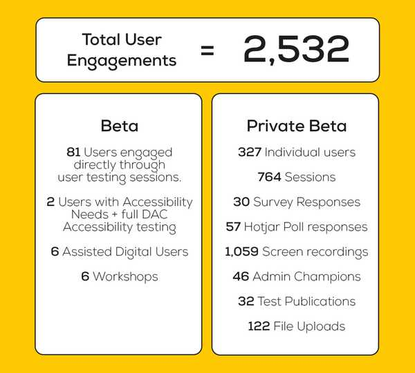

Guidance on understanding and engaging with the users of published statistics
User engagement is about building sustainable relationships and feedback loops between statistics producers, users and potential users of statistics and other relevant stakeholders.
Being user centred is a key departmental priority. It is critical that we actively engage with the users of our statistics, and not just the ones who shout the loudest. There are thousands of users out there and teams should be actively be getting feedback on their publications from a variety of users - policy colleagues, local authorities, schools, media, and the general public to name but a few.
Users of statistics come from a broad range of different backgrounds and organisations and may need to use our statistics for a wide variety of reasons. We need to do our best to understand these different kinds of users and cater for them all.
The Code of Practice for Statistics states that “users of statistics and data should be at the centre of statistical production; their needs should be understood, their views sought and acted on, and their use of statistics supported”. The quality pillar of the Code of Practice also reminds us that statistics should fit their intended uses. Producers of statistics will only know whether this element of quality continues to be achieved by regularly engaging with a full range of users.
The USER hub is now available on the GSS website, this is a central resource to help producers of statistics develop the knowledge, skills and techniques needed to engage effectively with their audiences.
Download this top tips document produced for the GSS, as a starting point for understanding how you can improve your user engagement.
Through our work engaging users on EES we have built up a list of interested users who have stated a willingness to be contacted about opportunities to be involved in user testing of our statistics on the platform, if you have any suggestions for things for us to test on EES with these users, please contact explore.statistics@education.gov.uk.
More advice and guidance will follow in this space. In the meantime, if you’re interested in user engagement please contact Heather Brown.
Explore Education Statistics was born from a discovery project, where the emphasis of the discovery was to understand who the users of the Department’s official statistics are, what they need, and where the DfE are currently meeting, exceeding or failing to meet those needs. We spoke to over 90 users directly, via 1 to 1 sessions or workshops and had over 130 survey responses. We used this research to create user personas and user stories which we then assessed ourselves against to see how well we were meeting those needs - the result of this was a recommendation that we needed to do something better. Our discovery report is published on gov.uk.
Following the discovery we moved through to the alpha phase, where we built prototypes and carried out extensive user testing to firm up the functionality that might be required - focussing on different user journeys and the user experience at each step. We then passed a GDS service assessment where our approach was tested against the GDS service standard before moving into the private beta phase where we started building the service for real. We user-tested every bit of the journey thoroughly and used feedback from users to iterate on the functionality we were making available. User testing was primarily through 1 on 1 sessions where users would be set activities to work through and we would watch how the user clicked through each part of the relevant journey and to ask what they might expect to see at any different steps of the process - both when creating/publishing statistics releases and using releases after publishing. We also ran workshops and carried out user surveys to collect as much evidence as possible, for more information on this take a look at the write up of our private beta phase on Hive IT’s website.

In March 2020 we wrapped up the build of the service and were given the green light via a GDS service assessment to move into our public beta phase. That’s when we started using the service for real and teams started publishing statistics via EES only. Ongoing user feedback has been really important throughout public beta as it has helped us move the service from a minimal viable product to one that works in the best way possible for everyone. We also use this engagement to help us understand how well we are meeting our KPIs, which we review regularly to see how well we are meeting the original aims of the service thinking back to our original discovery and what users told us they needed. There are a number of ongoing feedback routes open to users during the public beta phase of the service:
Beta banner (service focus) Users can submit feedback through the beta banner from any EES page, and responses are managed by the statistics development team. Feedback so far has mostly been aimed at the service functionality more generally but we do regularly get publication specific feedback which we share with the relevant teams.
Formal user testing (service focus) Our EES team will speak to users via user testing sessions to help inform future iterations to functionality.
In-release feedback requests (publication focus) Some teams have been including specific calls for feedback within their release pages e.g. - https://explore-education-statistics.service.gov.uk/find-statistics/apprenticeships-and-traineeships
Google analytics We collect user analytics to help us understand what users are doing with our statistics. This information is shared with production teams via our EES analytics app.
For more information, get in touch with the team at explore.statistics@education.gov.uk.
In 2020 we created a new statistical release which incorporated changes to the annual Outcomes for children looked after by LAs statistical release and outcomes within the Characteristics of children in need statistical release, proposed by the department in September 2020. Improving these statistics was a commitment made at the end of the CIN review. As part of the review of the National Statistics, an ad-hoc release was published (Outcomes of children in need including looked after children) and we asked users to submit feedback on the proposals through the running of a consultation via Gov.UK to which people could respond (Children in need and looked after children statistics: proposed changes). We involved policy colleagues (including policy analysts) in the proposed changes ahead of publishing. We engaged with colleagues across the department to identify known users and user groups and notified them of the request for feedback on the proposals We also followed up with a reminder as we got closer to the deadline. As part of this process, we had a meeting with the main stakeholders (the board of the National Association of Virtual School Heads). These key were very keen to respond to the proposals but were having difficulty with resource and time to provide a comprehensive response, so we agreed to have a meeting to talk through everything and we took notes. Reaching out to users and actively engaging with them produced a great result - we received a wide range of feedback from a range of sources including previously unknown users. We received external and internal feedback. We published the results of the feedback on the proposals on gov.uk, including a summary of the feedback received and what we were able to incorporate into the new publication. This was not an official Government consultation and we had to negotiate with gov.uk on how to publish the documents. We were advised that going forward, it would be preferable for user engagement of this type to be published alongside the statistical releases as part of the new EES platform. For any further information contact Bree Waine.
The ONS published a user engagement strategy in February 2021.
The strategy sets out that many producers of statistics are already carrying out regular and effective user engagement. The strategy aims to build on this good work to embed user engagement as an essential part of a statistician’s role. The strategy sets out a vision and addresses the barriers to effective user engagement via three goals:
Collaboration – collaborate across boundaries to offer a more coherent user experience
Capability – build capability and equip producers of statistics with the practical skills and tools to deliver effective user engagement activities
Culture – strengthen our culture and ensure user engagement is always an ongoing and essential part of a statistics producer’s role
The launch of the strategy, as well as two further videos on the value of user engagement are embedded below:
DfE are working with ONS and others to consider how to take forward work in this area. DfE have put together an initial statement (note that this is in draft and should only be used as a guide internally):
Work to understand and engage our users is vital to ensuring statistics are suitably and best communicated, and help the department in continuously reflecting and improving products and its services. DfE welcomes the ONS strategy and collective focus on user engagement.
As part of our efforts to meet wider user needs, the Department has undertaken extensive user research over the past few years in development of the new Explore Education Statistics platform to disseminate our statistics. We continue to develop this platform in line with user research and feedback. Through the intelligent use of supporting analytics, we are learning more about how our wide range of users find and use statistics, and how best to tailor our outputs to meet their needs. This will help us embed user need even more strongly into our statistics development.
In addition and more broadly, the department is working with ONS Best Practice Team to consider guidance around user engagement and how best to take forward the strategy for the department. In line with this, as part of these developments we will be reviewing and refreshing our current public-facing user engagement strategy which will then be reviewed annually.
Teams are encouraged to already start to think about who their users are, the channels they use to understand their needs and the user experience. Publication teams should keep abreast of user analytics to understand more about how users use and access their statistics and whether further improvements could be made. In addition, teams should also think about the ways they can glean feedback on their publication(s), this may include internal checks regards enhancements such as participating in content design scrum(s).
If you are considering changes to your publication and are contemplating a formal consultation do get in touch with HOP office early on to discuss.
To read more about consultations for background information please see the following two links:
With the first of the above links, please bear in mind this was written back in 2008 so certain aspects may have been updated but the background and principles do remain the same.
Some examples of previous consultations are included below:
We routinely publish statistical releases, but who is using these and why? It’s important to understand your user types and need, so we (public and department) get best value from what we do. Using these insights can help us to continually improve our products and services. Having a survey with your releases is a great way to glean this feedback. Examples of statistical publication surveys, as well as ONS top tips on user surveys are below/attached. It would be great to include your examples too, as well as capture your lessons learned and tips, so do send these to us. If you do want further advice, please contact Heather Brown or Ian Hewson.
User survey and questionnaire design top tips (word document)
Results from survey of statistics users (word document)